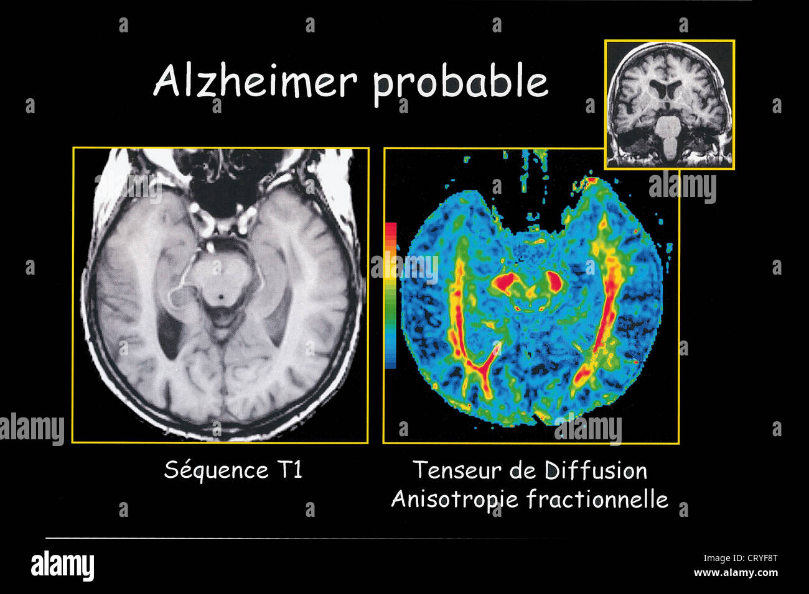
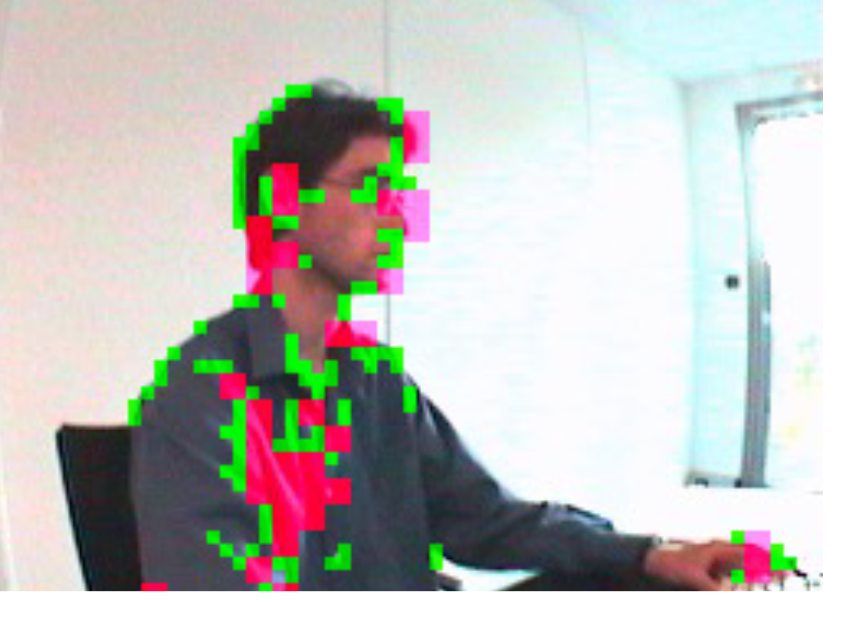
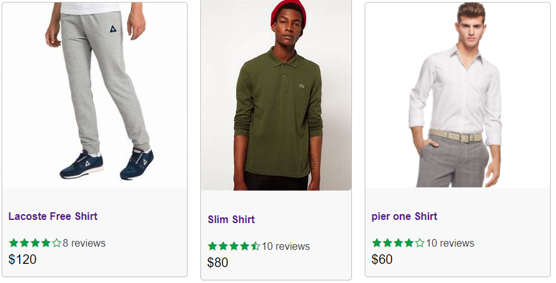
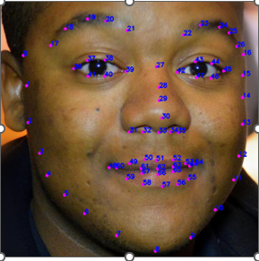

september, 2023
Dans ce projet nous allons Analyser le dataset ADNI et traiter des
images IRM en utlisant les stratégies 2D epsilon,3D ...,
afin d'avoir un des modèles performants pour predire l' Alzheimer
chez un patient.


Given an initial model (CNN) trained to recognize objects, we seek to adapt this model to new images arriving on the fly.

Dans ce projet, on se propose de benchmarker l’ensemble de la chaîne de traitement incluant de manière non-exhaustif :
• Les pré-traitements (augmentations de données, génération du graphe)
• Les architectures de réseaux sur graphes (couches GCN/GAT).

Le site possède toutes les fonctionnalités de base des principaux E-commerce, telles que :
- inscription sur le site (soit en tant que clients ou vendeurs)
- Recherches de produits
- Ajouter ou supprimer un produit de votre panier
- Achat via PayPal
- Création et élimination de la liste de courses
- voir l'historique de la commande
- Service client

Le programme est basé sur l'étude et la création d'ensembles de données composés de visages pour l'apprentissage automatique.
Les points qui composent les différents traits du visage (mâchoire, nez, bouche, yeux)